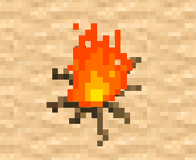
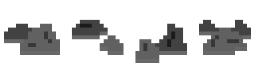
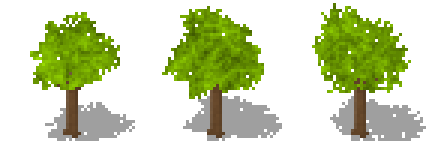
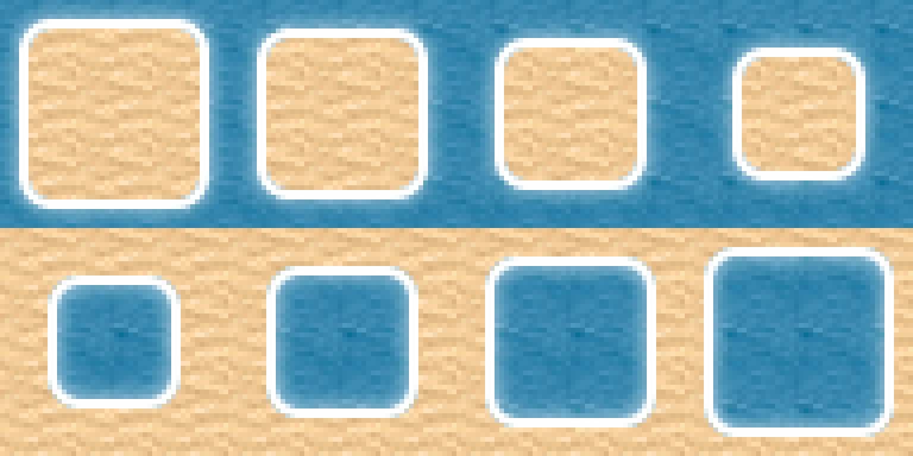
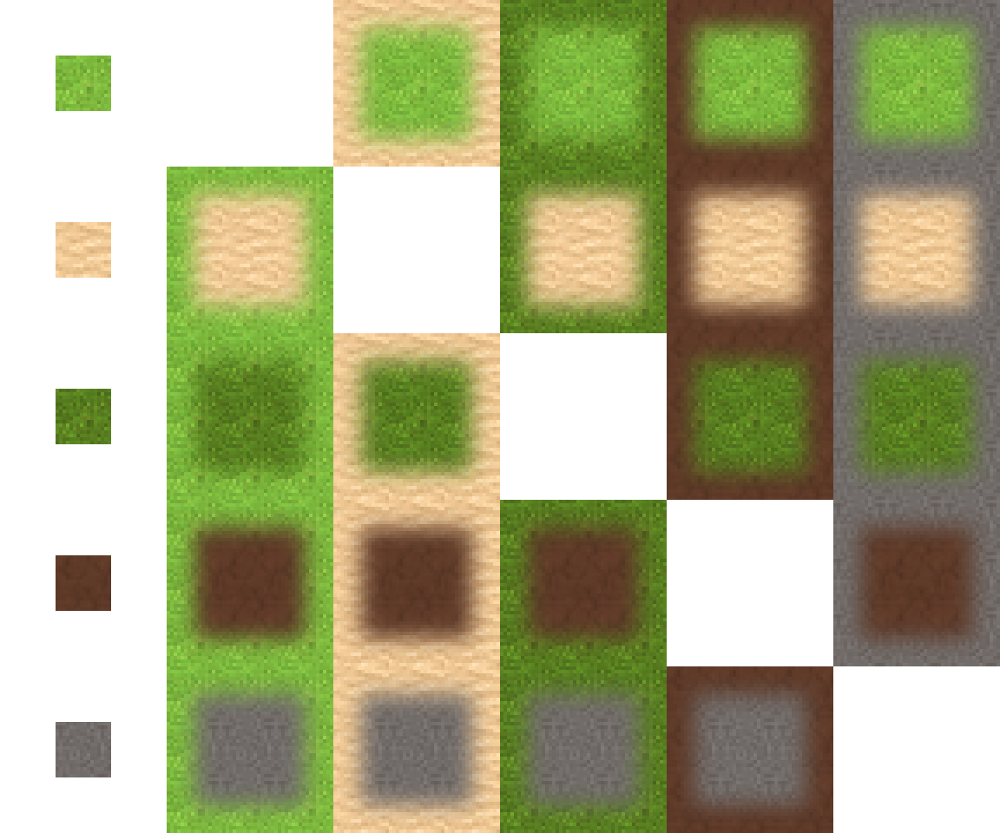

IGB200
Overview
A game was to be made in a group of 4 that followed the theme of QUT Open day.
Our group had chose to do an island based survival game where the character would build skills relating to QUT in order to escape the island and make QUT O'Week in time.
The execution of this was poorly done and to be honest did not reflect the initial scope of the project well, however the game itself was functional and showed unique gameplay over others, most notably being a tile-based game.
What was learnt
Development of the project
In early development, a unity preset was loaded and a character was added. The only real functionality was the ability to walk and collect sticks from trees.


Eventually textures were added along with the ability to collect multiple items. A title screen was finally created and cleaner UI was added after.


A campfire along with several assets were created by me to make the environment more engaging.



My favourite contribution is the dynamic tiles where each water tile would connect and be animated along with the tiling nature of everything else.



Possible Improvements
The character asset was made by another member and felt out of place from the rest of the assets.
One of the biggest issues was I was responsible for almost all asset creation and a lot of the core gameplay mechanics. If I had the option to chose one I would have stuck with asset creation to make the game look and feel as smooth as possible.
A game like this with tweaks made to remove the initial theme of O'Week has high potential, and could be worked on or even rewritten in future.